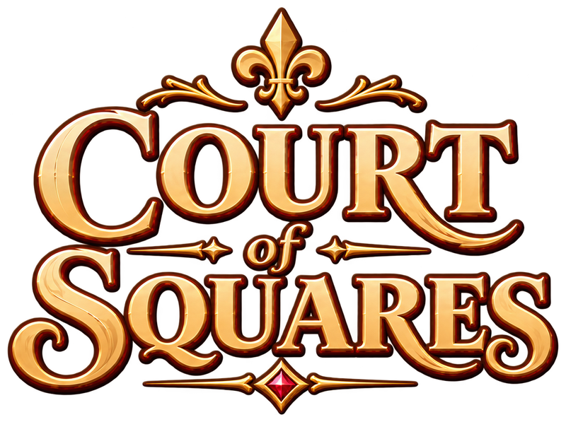

Des échecs paisibles avec huit pièces uniques. Aidez-nous à le tester sur Android avant le lancement.
Rejoindre la bêta Android
C’est gratuit et ça prend environ une minute. Utilisez pour les trois étapes le même compte Google que celui du Play Store de votre téléphone Android.
-
Rejoindre le groupe de testeurs
Connectez-vous avec votre compte Google et cliquez sur Rejoindre le groupe (Join group). Vous ne recevrez pas d’e-mails du groupe.
Rejoindre le groupe de testeurs -
Devenir testeur
Ouvrez ce lien et touchez Devenir testeur (Become a tester). S’il est indiqué que l’application n’est pas encore disponible, attendez quelques minutes après l’étape 1 et rouvrez-le.
Devenir testeur -
Télécharger sur Google Play
Installez Court of Squares depuis Google Play sur votre téléphone ou votre tablette Android.
Ouvrir sur Google Play
Comment vous pouvez aider
- Restez dans la bêta au moins deux semaines. Google n’autorise le lancement d’un nouveau jeu qu’une fois que ses testeurs sont restés 14 jours dans la bêta : rester aide vraiment.
- Jouez quelques fois : une partie contre l’ordinateur, l’énigme du jour et le jardin, et une partie en ligne si possible.
- Dites-nous ce qui vous semble confus, lent ou cassé. Laissez un avis privé sur la page Google Play du jeu, écrivez sur notre Discord ou par e-mail à courtofsquares@gmail.com. Vous pouvez écrire en français.
Bon à savoir
- Votre progression et vos déblocages seront conservés dans la version finale. La bêta est le même jeu sur Google Play : au lancement, vous recevrez simplement la mise à jour. Associez un compte dans Paramètres › Compte pour ne rien perdre si vous changez de téléphone.
- Le jeu est gratuit et sans publicité. Le Court Pass, facultatif, est un véritable achat unique, même pendant la bêta, et il reste à vous après le lancement.
- Vous pouvez quitter la bêta à tout moment depuis la page « Devenir testeur ».
Un souci pour rejoindre la bêta ? Vérifiez que vous êtes connecté au même compte Google sur cette page et dans le Play Store. Si le jeu n’apparaît toujours pas dans le Play Store, écrivez-nous et nous réglerons ça.